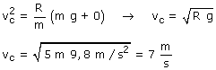

a)
|
|


El menor valor posible de la velocidad corresponderá al caso en que la normal de la pista sea cero, es decir cuando la moto recorra la pista sometida solamente a su peso. esta velocidad se denomina velocidad crítica (vc)
